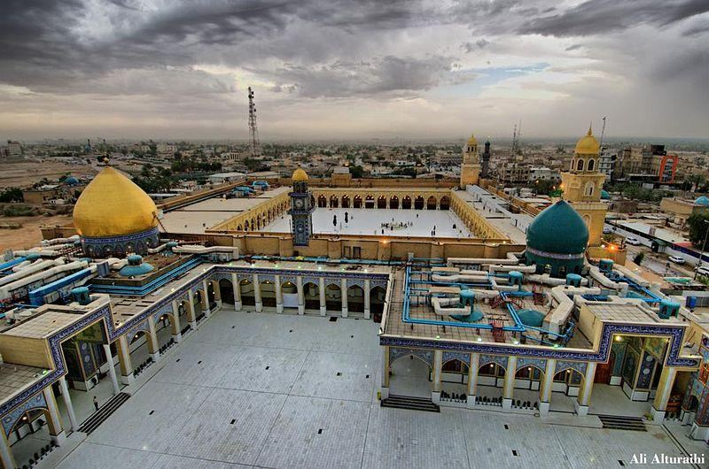

There is no blame on you if you divorce women whom you have not touched, nor you specified for them an obligation (mahr), but bestow on them, the wealthy according to his means, and the poor according to his means. A gift of a reasonable amount is due from those who wish to do the right thing. And, if you divorce them before you touched them while already you have specified for them an obligation (mahr), then the half of the mahr, unless they remit it, or is remitted by him in whose hands is the marriage tie; and the remission is the nearest to strong guarding. And do not forget liberality between yourselves—for Allah sees well all that you do.
যাদেরকে আপনি স্পর্শ করেননি তাদের তালাক দিলে আপনার কোন দোষ নেই এবং তাদের জন্য কোন ফরজ (মাহর) নির্দিষ্ট না করলেও তাদের ধনীদেরকে তার সামর্থ্য অনুযায়ী এবং গরীবকে তার সামর্থ্য অনুযায়ী দান করুন। যারা সঠিক কাজটি করতে ইচ্ছুক তাদের কাছ থেকে একটি যুক্তিসঙ্গত পরিমাণের উপহার রয়েছে। এবং, যদি আপনি তাদের স্পর্শ করার পূর্বে তাদের তালাক দেন অথচ আপনি ইতিমধ্যেই তাদের জন্য একটি বাধ্যবাধকতা (মাহর) নির্দিষ্ট করে রেখেছেন, তবে মাহরের অর্ধেক, যদি না তারা তা মাফ করে দেয়, অথবা যার হাতে বিবাহের বন্ধন রয়েছে তার দ্বারা মাফ করা হয়; এবং মওকুফ শক্তিশালী পাহারার নিকটতম। আর তোমরা নিজেদের মধ্যে উদারতাকে ভুলে যেও না- কেননা তোমরা যা কর আল্লাহ তা দেখেন।
Remarks:
মন্তব্য:
In a regular marriage, the dowry (mahr) must be given before the groom touches the bride. However, in a Mutah marriage, if the groom gives the dowry beforehand, the bride might leave. So, in a Mutah marriage, the dowry may be given once the marriage ends. The dowry should be given based on the contract of the marriage and the sexual contact. [Mutah marriage is further discussed in Section 6 of Chapter 4]
নিয়মিত বিবাহে, বর কনেকে স্পর্শ করার আগে যৌতুক (মহর) দিতে হবে। তবে মুতাহ বিয়েতে বর আগে থেকে যৌতুক দিলে কনে চলে যেতে পারে। সুতরাং, মুতাহ বিবাহে, বিবাহ শেষ হওয়ার পরে যৌতুক দেওয়া যেতে পারে। যৌতুক বিবাহের চুক্তি এবং যৌন যোগাযোগের ভিত্তিতে দেওয়া উচিত। [অধ্যায় 4 এর 6 ধারায় মুতাহ বিবাহ সম্পর্কে আরও আলোচনা করা হয়েছে]
Section-43 of Chapter-2 [Verse 238–245]: As-Salat, Maintenance of women, and Fighting Battles
অধ্যায়-2 [আয়াত 238-245] এর ধারা-43: সালাত, মহিলাদের ভরণপোষণ এবং যুদ্ধ যুদ্ধ
Guard strictly the salats, especially the middle salat, and stand before Allah in a devout (frame of mind). If you fear (an enemy), pray on foot or riding, but when you are in security, celebrate Allah's praises in the manner He has taught you—which you knew not. Those of you who die and leave widows should bequeath for their widows a year's maintenance and residence, but if they leave, there is no blame on you for what they do with themselves, provided it is reasonable; and Allah is Exalted in Power, Wise. For divorced women maintenance on a reasonable (scale). These are a duty on the guards (Al Muttaqin). Thus, does Allah make clear His Verses to you in order that you may understand. Did you not think of those who went forth from their homes in thousands fearing death? Allah said to them, ―Die‖, and then He restored them to life; for Allah is full of bounty to mankind, but most of them are ungrateful. Then fight in the cause of Allah and know that Allah hears and knows all things. Who is he that will loan to Allah a beautiful loan, which Allah will double unto his credit and multiply many times? It is Allah that decreases or increases, and to Him you shall return.
নামাযগুলোকে কঠোরভাবে হেফাজত করুন, বিশেষ করে মধ্যবর্তী সালাতে এবং আল্লাহর সামনে একনিষ্ঠভাবে (মনের ফ্রেমে) দাঁড়ান। যদি আপনি (শত্রু) ভয় পান তবে পায়ে হেঁটে বা অশ্বারোহণে নামায পড়ুন, কিন্তু যখন আপনি নিরাপদে থাকবেন, তখন আল্লাহর প্রশংসা সেভাবে করুন যেভাবে তিনি আপনাকে শিখিয়েছেন - যা আপনি জানতেন না। তোমাদের মধ্যে যারা মারা যায় এবং বিধবা রেখে যায় তাদের উচিত তাদের বিধবাদের জন্য এক বছরের ভরণপোষণ ও বাসস্থানের অসিয়ত করা, কিন্তু যদি তারা চলে যায়, তবে তারা নিজেদের সাথে যা করেছে তাতে তোমাদের কোন দোষ নেই, যদি তা যুক্তিযুক্ত হয়; আর আল্লাহ পরাক্রমশালী, প্রজ্ঞাময়। তালাকপ্রাপ্ত মহিলাদের জন্য যুক্তিসঙ্গত (স্কেল) ভরণপোষণ। এগুলো রক্ষীদের (আল মুত্তাকিন) দায়িত্ব। এভাবেই আল্লাহ তাঁর আয়াতসমূহ তোমাদের জন্য স্পষ্ট করেন যাতে তোমরা বুঝতে পার। আপনি কি তাদের কথা ভাবেননি যারা মৃত্যুর ভয়ে হাজারে হাজারে বাড়ি থেকে বের হয়েছে? আল্লাহ তাদের বললেন, 'মরো', তারপর তিনি তাদেরকে জীবিত করলেন; কারণ আল্লাহ মানুষের প্রতি অনুগ্রহে পরিপূর্ণ, কিন্তু তাদের অধিকাংশই অকৃতজ্ঞ। অতঃপর আল্লাহর পথে যুদ্ধ কর এবং জেনে রাখ যে, আল্লাহ সবকিছু শোনেন ও জানেন। সে কে আছে যে আল্লাহকে সুন্দর ঋণ দেবে, যাকে আল্লাহ তার কৃতিত্বের দ্বিগুণ ও বহুগুণ বাড়িয়ে দেবেন? আল্লাহই হ্রাস করেন বা বৃদ্ধি করেন এবং তাঁর কাছেই তোমাদের প্রত্যাবর্তন করা হবে।
Discussion
আলোচনা
Middle Prayer is discussed in Chapter-11. The above verses establish a mosque based supervision and support system for widows and divorced women, as the verses say: ―These are a duty on the Guards (Al Muttaqin).‖ That was a time when many men were participating in military expeditions and battles and many were killed.
মধ্য প্রার্থনার বিষয়ে আলোচনা করা হয়েছে অধ্যায়-১১ এ। উপরের আয়াতগুলি বিধবা এবং তালাকপ্রাপ্ত মহিলাদের জন্য একটি মসজিদ ভিত্তিক তত্ত্বাবধান এবং সহায়তা ব্যবস্থা প্রতিষ্ঠা করে, যেমন আয়াতে বলা হয়েছে: "এগুলি রক্ষীদের (আল মুত্তাকিন) উপর একটি দায়িত্ব।" এটি এমন একটি সময় ছিল যখন অনেক পুরুষ সামরিক অভিযান এবং যুদ্ধে অংশ নিচ্ছিল এবং অনেককে হত্যা করা হয়েছিল।
Section-44 of Chapter-2 [Verse 246-260]: Islamic Leadership (Main Discussion)
অধ্যায়-2 [আয়াত 246-260] এর ধারা-44: ইসলামী নেতৃত্ব (মূল আলোচনা)
Have you not turned your vision to the Chiefs of the Children of Israel after Moses? They said to a prophet among them: "Appoint for us a king that we may fight in the cause of Allah". Remarks:
আপনি কি মূসার পর বনী ইসরাঈলের প্রধানদের প্রতি দৃষ্টিপাত করেননি? তারা তাদের মধ্য থেকে একজন নবীকে বললো, "আমাদের জন্য একজন বাদশাহ নিযুক্ত করুন যাতে আমরা আল্লাহর পথে যুদ্ধ করতে পারি"। মন্তব্য:
Joshua was a helper of Moses. Joshua became the leader after the departure of Moses. He captured Canaan. According to the instructions of Moses, they were not allowed to appoint a king or even tribal chiefs. They lived in Canaan accordingly for about one hundred twenty-five years (1150 BCE to 1025 BCE). In times of crisis, they were led by temporary leaders called Judges. The system was peaceful. Statehood ultimately brings forth wars and internal conflicts. However, the Jews felt the necessity of a king due to conflicts with neighboring tribes. Some of them were evicted from their homes.
যিহোশূয় মোশির একজন সাহায্যকারী ছিলেন। মূসার প্রস্থানের পর জোশুয়া নেতা হন। তিনি কেনানকে বন্দী করেন। মুসার নির্দেশ অনুসারে, তাদের রাজা বা এমনকি গোত্রীয় প্রধান নিয়োগ করার অনুমতি ছিল না। তারা সেই অনুযায়ী প্রায় একশত পঁচিশ বছর (1150 খ্রিস্টপূর্বাব্দ থেকে 1025 খ্রিস্টপূর্বাব্দ) ধরে কানানে বসবাস করেছিল। সঙ্কটের সময়ে, তারা বিচারক নামে অস্থায়ী নেতাদের নেতৃত্বে ছিলেন। সিস্টেম শান্তিপূর্ণ ছিল. রাষ্ট্রত্ব শেষ পর্যন্ত যুদ্ধ এবং অভ্যন্তরীণ দ্বন্দ্ব নিয়ে আসে। যাইহোক, প্রতিবেশী উপজাতিদের সাথে বিরোধের কারণে ইহুদিরা রাজার প্রয়োজনীয়তা অনুভব করেছিল। তাদের কয়েকজনকে তাদের বাড়িঘর থেকে উচ্ছেদ করা হয়েছে।
He (Prophet) said: "Is it not possible, if you were commanded to fight, that you will not fight?" They said: "How could we refuse to fight in the cause of Allah seeing that we were turned out of our homes and our families?" But when they were commanded to fight, they turned back, except a small band among them. But Allah has full knowledge of those who do wrong. Their Prophet said to them: "Allah has appointed Talut as king over you." They said: "How can he exercise authority over us when we are better fitted than he to exercise authority, and he is not even gifted with wealth in abundance?" He said, "Allah has chosen him above you, and has gifted him abundantly with knowledge and stature; Allah grants His authority to whom He pleases. Allah is All–Embracing, and He knows all things." And their Prophet said to them: "A sign of his authority is that there shall come to you the Ark of the Covenant with therein of security from your Lord and the relics left by the family of Moses and the family of Aaron carried by angels. In this is a symbol for you if you indeed have faith."
তিনি (নবী) বললেনঃ এটা কি সম্ভব নয়, যদি তোমাকে যুদ্ধের নির্দেশ দেয়া হয়, তবে তুমি যুদ্ধ করবে না? তারা বললঃ আমরা কিভাবে আল্লাহর পথে যুদ্ধ করতে অস্বীকার করব যখন আমরা আমাদের বাড়িঘর ও পরিবার থেকে বিতাড়িত হয়েছি? কিন্তু যখন তাদেরকে যুদ্ধের নির্দেশ দেয়া হলো, তখন তাদের মধ্যে একটি ছোট দল ছাড়া তারা ফিরে গেল। কিন্তু যারা অন্যায় করে আল্লাহ তাদের সম্পর্কে সম্যক অবগত। তাদের নবী তাদেরকে বললেনঃ আল্লাহ তালুতকে তোমাদের উপর বাদশাহ নিযুক্ত করেছেন। তারা বললঃ "সে কিভাবে আমাদের উপর কর্তৃত্ব প্রয়োগ করবে যখন আমরা কর্তৃত্ব প্রয়োগ করার জন্য তার চেয়ে বেশি উপযুক্ত, এবং তিনি প্রাচুর্য সম্পদও দান করেননি?" তিনি বললেন, "আল্লাহ তাকে তোমার উপরে মনোনীত করেছেন, এবং তাকে জ্ঞান ও মর্যাদা দিয়ে প্রচুর পরিমাণে দান করেছেন; আল্লাহ যাকে ইচ্ছা তার কর্তৃত্ব দান করেন। আল্লাহ সর্ব-বিস্তৃত এবং তিনি সবকিছু জানেন।" এবং তাদের নবী তাদের বললেন: "তাঁর কর্তৃত্বের একটি নিদর্শন এই যে, তোমাদের কাছে আসবে চুক্তির সিন্দুক যার মধ্যে তোমাদের পালনকর্তার পক্ষ থেকে নিরাপত্তা থাকবে এবং মূসার পরিবার ও হারুনের পরিবারের রেখে যাওয়া ধ্বংসাবশেষ যা ফেরেশতাদের দ্বারা বহন করা হয়েছে। এতে তোমাদের জন্য একটি প্রতীক যদি তোমরা বিশ্বাস কর।"
Remarks:
মন্তব্য:
Allah appointed Talut as their king. Muhammad (pbuh) performed both prophetic and leadership duties himself. His Ummah needed a leader after his death. It is most likely that he nominated Hadrat Ali (R) as the leader to succeed him. However, Hadrat Ali was only about 32 years old when the Prophet (pbuh) departed, and the people were not ready to obey a young man. Hadrat Ali was from Makkah, and many in Madinah preferred one of their own to be their leader. At that time, the Roman and Persian Emperors had not yet been defeated, and for them, leadership primarily meant the leadership of Madinah. Ultimately, the people from the surrounding tribes pledged allegiance (Ba‘yah) to Hadrat Abu Bakr, and he became the first leader. Abu Bakr referred to himself as "Caliphatur Rasul," which means "Representative of the Prophet." The Highest Islamic Leadership (Highest Imam / Caliph) serves as the Guardian of the Islamic Ummah. He oversees the Guards (Al Muttaqin / an unpaid paramilitary force of devout individuals) and collects zakat through mosques at various levels and spends it for the benefit of Islam. 1. The Seat of Highest Islamic Leadership
আল্লাহ তালুতকে তাদের বাদশাহ নিযুক্ত করেন। মুহাম্মাদ (সাঃ) ভবিষ্যদ্বাণীমূলক এবং নেতৃত্বের উভয় দায়িত্ব নিজেই পালন করেছেন। তার মৃত্যুর পর তার উম্মতের একজন নেতার প্রয়োজন ছিল। সম্ভবত তিনি তাঁর স্থলাভিষিক্ত হওয়ার জন্য হযরত আলী (রাঃ)-কে নেতা মনোনীত করেছিলেন। যাইহোক, হযরত আলীর বয়স ছিল মাত্র 32 বছর যখন নবী (সাঃ) চলে গেলেন এবং লোকেরা একজন যুবকের কথা মানতে প্রস্তুত ছিল না। হযরত আলী মক্কার অধিবাসী ছিলেন এবং মদীনার অনেকেই তাদের নেতা হতে তাদের একজনকে পছন্দ করতেন। সেই সময়ে, রোমান ও পারস্য সম্রাটরা তখনো পরাজিত হয়নি এবং তাদের কাছে নেতৃত্ব বলতে প্রাথমিকভাবে মদীনার নেতৃত্বকে বোঝায়। অবশেষে, আশেপাশের গোত্রের লোকেরা হযরত আবু বকরের কাছে আনুগত্যের (বায়আ) প্রতিশ্রুতি দেয় এবং তিনিই প্রথম নেতা হন। আবু বকর নিজেকে "খলিফাতুর রাসুল" বলে উল্লেখ করেছেন, যার অর্থ "নবীর প্রতিনিধি"। সর্বোচ্চ ইসলামী নেতৃত্ব (সর্বোচ্চ ইমাম/খলিফা) ইসলামী উম্মাহর অভিভাবক হিসেবে কাজ করে। তিনি গার্ডদের (আল মুত্তাকিন / ধর্মপ্রাণ ব্যক্তিদের একটি অবৈতনিক আধাসামরিক বাহিনী) তত্ত্বাবধান করেন এবং বিভিন্ন স্তরে মসজিদের মাধ্যমে জাকাত সংগ্রহ করেন এবং ইসলামের সুবিধার জন্য ব্যয় করেন। 1. সর্বোচ্চ ইসলামী নেতৃত্বের আসন
The Seat of Highest Islamic Leadership was the Prophet‘s Mosque at Madinah. Subsequently, Hadrat Ali shifted the Seat to the Great Mosque of Kufa.
সর্বোচ্চ ইসলামী নেতৃত্বের আসন ছিল মদীনার মসজিদে নববী। পরবর্তীকালে, হযরত আলী কুফার মহান মসজিদে আসনটি স্থানান্তরিত করেন।
FIGURE 2.27: The Great Mosque of Kufa

চিত্র 2_27 / Figure 2_27
চিত্র 2.27: কুফার মহান মসজিদ
চিত্র 2_27 / Figure 2_27
Caliph Omar founded the city of Kufa. He settled some Jews in the city who continued living in Arabian Peninsula even after being evicted from Madinah. Caliph Omar constructed the Great Mosque as well. ―Sources attribute the construction of the Great Mosque of Kufa in the middle of the 7th century to the Caliph Omar. There is a legend that says the edifice was built on a temple constructed by Adam…It is also believed that the angel Gabriel was referring to the mosque when he declared, "Twelve miles of lands from all directions of the mosque are blessed by its holiness …‖ – Wikipedia, The free Encyclopedia. There is a reason for Caliph Omar to found the city of Kufa and Caliph Ali to shift the Seat of the Highest Islamic Leadership over there: Kufa is close to Babylon. In light of the following verses, the area is the center of Islamic Ummah:
খলিফা ওমর কুফা শহর প্রতিষ্ঠা করেন। তিনি এই শহরে কিছু ইহুদিদের বসতি স্থাপন করেছিলেন যারা মদীনা থেকে বিতাড়িত হওয়ার পরেও আরব উপদ্বীপে বসবাস অব্যাহত রেখেছিলেন। খলিফা ওমর মহান মসজিদও নির্মাণ করেছিলেন। - সূত্রগুলি খলিফা ওমরকে 7 ম শতাব্দীর মাঝামাঝি কুফার গ্রেট মসজিদ নির্মাণের জন্য দায়ী করে। একটি কিংবদন্তি আছে যে ভবনটি আদম দ্বারা নির্মিত একটি মন্দিরের উপর নির্মিত হয়েছিল...এটাও বিশ্বাস করা হয় যে দেবদূত গ্যাব্রিয়েল মসজিদটির কথা উল্লেখ করেছিলেন যখন তিনি ঘোষণা করেছিলেন, "মসজিদের চারদিক থেকে বারো মাইল ভূমি তার পবিত্রতায় আশীর্বাদিত ..." - উইকিপিডিয়া, মুক্ত বিশ্বকোষ। খলিফা ও সিফাত আলীর শহরের খলিফা ও কুমর আলীর কাছে একটি কারণ রয়েছে। সেখানে সর্বোচ্চ ইসলামী নেতৃত্ব: কুফা ব্যাবিলনের নিকটবর্তী, নিম্নলিখিত আয়াতের আলোকে, এলাকাটি ইসলামী উম্মাহর কেন্দ্রস্থল:
―And this is a Book, which We have sent down, bringing blessings and confirming which came before it, that thou may warn the ‗Mother of Cities‘ and all around her. Those who believe in the hereafter believe in this, and they are constant in guarding their prayers.‖ [Al Quran 6:92]
"এবং এটি একটি কিতাব, যা আমি নাযিল করেছি, বরকত নিয়ে এসেছে এবং এর আগে যা এসেছে তার সত্যায়নকারী, যাতে আপনি "শহরের জননী" এবং তার চারপাশকে সতর্ক করতে পারেন। যারা পরকালে বিশ্বাস করে তারা এতে বিশ্বাস করে এবং তারা তাদের নামাজের হেফাজতে অবিচল থাকে।'' [আল কুরআন 6:92]
―Thus, have We sent by inspiration to thee an Arabic Qur'an that thou may warn the ‗Mother of Cities‘ and all around her. And warn of the Day of Assembly, of which there is no doubt—some will be in the Jannaat, and some in the Blazing Fire. If Allah had so willed, He could have made them a single people, but He admits whom He wills to His Mercy; and the wrong-doers will have no protector, nor helper.‖ [Al Quran 42:7-8]
"এভাবে, আমরা আপনার কাছে প্রেরণা দিয়ে একটি আরবি কোরআন পাঠিয়েছি যাতে আপনি "শহরের মা" এবং তার চারপাশের সবাইকে সতর্ক করতে পারেন। এবং সমাবেশের দিন সম্পর্কে সতর্ক করুন, যার মধ্যে কোন সন্দেহ নেই- কিছু থাকবে জান্নাতে, আর কিছু থাকবে জ্বলন্ত আগুনে। যদি আল্লাহ ইচ্ছা করতেন, তবে তিনি তাদের একক জাতিতে পরিণত করতে পারতেন, কিন্তু তিনি যাকে ইচ্ছা তাঁর রহমতে দাখিল করেন; আর জালেমদের কোন অভিভাবক ও সাহায্যকারী থাকবে না।'' [আল কুরআন 42:7-8]
Babylon is known as the Mother of Cities. It was the capital of the great Medo-Persian Empires. The city fell into ruins over time, but it had/has surviving extensions, such as Seleucia (the capital of the Grecian Empire), Ctesiphon (the capital of the Persian Empire), Kufa (the capital of the Caliphate), and Baghdad (the capital of the Abbasid Sultan Caliphate and present-day Iraq). Arabians and Persians had been living around Babylon since ancient times. Therefore, the people living around the Mother of Cities (Babylon) were Arabs and Persians. These people were primarily targeted for conversion to Islam. In light of the following verses, the land of Arabs and Persians form the Home of Ummah (Darussalam / Home of Peace). The Home extends from Morocco to the Pamirs. General area Babylon is the Center of Gravity of the land.
ব্যাবিলন শহর মা হিসেবে পরিচিত। এটি মহান মেডো-পারস্য সাম্রাজ্যের রাজধানী ছিল। সময়ের সাথে সাথে শহরটি ধ্বংসস্তূপে পড়ে যায়, কিন্তু এর টিকে থাকা সম্প্রসারণ ছিল/ আছে, যেমন সেল্যুসিয়া (গ্রীসিয়ান সাম্রাজ্যের রাজধানী), কটিসফোন (পারস্য সাম্রাজ্যের রাজধানী), কুফা (খিলাফতের রাজধানী), এবং বাগদাদ (আব্বাসীয় সুলতান খিলাফতের রাজধানী এবং বর্তমান ইরাক)। প্রাচীনকাল থেকেই ব্যাবিলনের আশেপাশে আরব ও পারস্যরা বসবাস করে আসছিল। অতএব, মাদার অফ সিটিস (ব্যাবিলন) এর আশেপাশে বসবাসকারী লোকেরা আরব এবং পারস্য ছিল। এই লোকদের প্রাথমিকভাবে ইসলাম ধর্মে ধর্মান্তরিত করার জন্য টার্গেট করা হয়েছিল। নিম্নলিখিত আয়াতের আলোকে, আরব ও পারস্যের ভূমি উম্মাহ (দারুসসালাম/শান্তির বাড়ি) গঠন করে। বাড়িটি মরক্কো থেকে পামির পর্যন্ত বিস্তৃত। সাধারণ এলাকা ব্যাবিলন হল জমির মাধ্যাকর্ষণ কেন্দ্র।
―This is the way of thy Lord, leading straight. We have detailed the verses for those who receive admonition. For them will be a Home of Peace (Darussalam / Home of Ummah / Morocco to the Pamirs) in the presence of their Lord. He will be their protecting Friend, because they practised.‖ [Al Quran 6:126-127]
-এটা তোমার প্রভুর পথ, সরল পথ। যারা উপদেশ গ্রহণ করে তাদের জন্য আমরা আয়াতগুলো বিস্তারিত করেছি। তাদের জন্য তাদের প্রভুর উপস্থিতিতে শান্তির ঘর (দারুসসালাম / উম্মাহর বাড়ি / পামিরদের মরক্কো) হবে। তিনি তাদের রক্ষাকারী বন্ধু হবেন, কারণ তারা অনুশীলন করেছে।'' [আল কুরআন 6:126-127]
FIGURE 2.28: Home of Ummah / Home of Peace / Darussalam The Roman and Persian emperors were rapidly defeated by the immediate followers of Prophet Muhammad (pbuh). Thus, Islam was preached in the Home of Ummah by defeating the Taghuts (opposing tribal chiefs, kings, and emperors) through Jihad. The above narration is supported by Islamic history and the map of the Muslim world. The plan of Allah never fails. Today, Islam is a well-established religion with well-defined land.

চিত্র 2_28 / Figure 2_28
চিত্র 2.28: উম্মাহর বাড়ি / শান্তির বাড়ি / দারুসসালাম রোমান এবং পারস্য সম্রাটরা নবী মুহাম্মদ (সাঃ) এর আশু অনুসারীদের দ্বারা দ্রুত পরাজিত হয়েছিল। এইভাবে, জিহাদের মাধ্যমে তাগুতদের (গোত্রীয় প্রধান, রাজা ও সম্রাটদের বিরোধী) পরাজিত করে উম্মাহর ঘরে ইসলাম প্রচার করা হয়েছিল। উপরের বর্ণনাটি ইসলামী ইতিহাস এবং মুসলিম বিশ্বের মানচিত্র দ্বারা সমর্থিত। আল্লাহর পরিকল্পনা কখনো ব্যর্থ হয় না। আজ, ইসলাম একটি সুপ্রতিষ্ঠিত ধর্ম যার সুনির্দিষ্ট ভূমি রয়েছে।
চিত্র 2_28 / Figure 2_28
The Standard Islamic Leadership
আদর্শ ইসলামিক নেতৃত্ব
Prophet Muhammad (pbuh) did not make any crown, throne, or palace. He did not have bodyguards or ceremonial guards. He did not circulate money. He did not collect tax. He did not make paid army and police. He did not establish any court. He did not have ministers. He did not have Majlis al Shura / Parliament. So, Prophet Muhammad (pbuh) did not make a government. He fought only to remove the Taghuts (Powers) so that the Idolaters could accept Islam freely and peacefully. He led the people from the Mosque of Madinah. Prophet (pbuh) sent Amirs (Leaders) in captured areas. They too controlled the people from the mosques. They collected zakat and sent it to Prophet (pbuh) to spend it for Islam. Therefore, the Islamic Leadership is based in the mosques at different levels. They sit in the mosques and lead regular prayers. They are easily approachable to the people. So, in the standard scenario, the Highest Islamic Leader or Caliph should be Imam of the Prophet‘s Mosque or of the Great Mosque of Kufa. However, he can also work from any other prominent mosque. A National Imam in the chain of Islamic Leadership should lead from a prominent mosque of his state. He is selected by the Highest Islamic Leadership (Caliph). The National Imam should have Zonal Imams under him, and the Zonal Imams should have Community (Village) Imams under them. The Imams of the community (village) mosques are the grassroots. The above structure may have additional tiers. The entire Islamic world should be unified under a single leadership, established through a network of mosques at various levels. This leadership does not form or run governments. The Highest Islamic Leadership (Caliph) is the Commander of the Guards (Al Muttaqin) as well, through a different chain of command. They are like a Paramilitary Force, but unpaid. Thus, in every Islamic country, there will be two military forces. One is the Forces of Al Muttaqin under the Highest Islamic Leadership, and the other is the National Defense Forces of the state under the National Leadership, which runs the government. The Home of the Ummah (Darussalam / Home of Peace, spanning from Morocco to the Pamirs) is a vast region encompassing many nations and states. The national or state leadership could be a king, amir, president, or prime minister, who may be selected, elected, or traditionally established. Their responsibilities include circulating money, collecting taxes, maintaining a paid national army, police, justice system, government departments, and more. However, they should be oath- bound (bayah) to the Highest Islamic Leadership (Caliph) and follow his orders based on the Quran. The Quran does not mandate that the entire Ummah be governed by a single government. Each country or nation should be governed independently. Otherwise, some nations might feel that they are dominated in the name of Islam. However, there can only be one Highest Islamic Leadership / Caliph. The entire Islamic Ummah must have a single Highest Islamic Leadership.
নবী মুহাম্মদ (সাঃ) কোন মুকুট, সিংহাসন বা প্রাসাদ তৈরি করেননি। তার দেহরক্ষী বা আনুষ্ঠানিক প্রহরী ছিল না। তিনি টাকা প্রচার করেননি। তিনি কর আদায় করেননি। তিনি বেতনভুক্ত সেনাবাহিনী ও পুলিশ করেননি। তিনি কোনো আদালত প্রতিষ্ঠা করেননি। তার মন্ত্রী ছিল না। তার মজলিস আল শূরা/সংসদ ছিল না। সুতরাং, হযরত মুহাম্মদ (সঃ) সরকার করেননি। তিনি যুদ্ধ করেছিলেন শুধুমাত্র তাগুতদের (শক্তি) অপসারণের জন্য যাতে মুশরিকরা স্বাধীনভাবে এবং শান্তিপূর্ণভাবে ইসলাম গ্রহণ করতে পারে। তিনি মদীনার মসজিদ থেকে লোকদের ইমামতি করেন। রাসুল (সাঃ) দখলকৃত এলাকায় আমীরদের (নেতাদের) পাঠান। তারাও মসজিদ থেকে লোকজনকে নিয়ন্ত্রণ করত। তারা যাকাত সংগ্রহ করে ইসলামের জন্য ব্যয় করার জন্য রাসূল (সা.)-এর কাছে পাঠাত। তাই ইসলামী নেতৃত্ব বিভিন্ন স্তরে মসজিদে ভিত্তিক। তারা মসজিদে বসে নিয়মিত নামাজ আদায় করেন। তারা সহজে মানুষের কাছে যায়। সুতরাং, আদর্শ পরিস্থিতিতে, সর্বোচ্চ ইসলামী নেতা বা খলিফাকে মসজিদুল হারাম বা কুফার মহান মসজিদের ইমাম হতে হবে। তবে তিনি অন্য কোন বিশিষ্ট মসজিদ থেকেও কাজ করতে পারেন। ইসলামী নেতৃত্বের শৃঙ্খলে একজন জাতীয় ইমামের উচিত তার রাষ্ট্রের বিশিষ্ট মসজিদ থেকে ইমামতি করা। তিনি সর্বোচ্চ ইসলামী নেতৃত্ব (খলিফা) দ্বারা নির্বাচিত হন। জাতীয় ইমামের অধীনে জোনাল ইমাম থাকতে হবে এবং জোনাল ইমামদের তাদের অধীনে কমিউনিটি (গ্রাম) ইমাম থাকতে হবে। কমিউনিটির (গ্রাম) মসজিদের ইমামরা তৃণমূল। উপরের কাঠামোর অতিরিক্ত স্তর থাকতে পারে। সমগ্র ইসলামী বিশ্বকে একক নেতৃত্বে ঐক্যবদ্ধ হতে হবে, বিভিন্ন স্তরে মসজিদের নেটওয়ার্কের মাধ্যমে প্রতিষ্ঠিত হতে হবে। এই নেতৃত্ব সরকার গঠন বা পরিচালনা করে না। সর্বোচ্চ ইসলামী নেতৃত্ব (খলিফা) হল গার্ডের কমান্ডার (আল মুত্তাকিন) পাশাপাশি, একটি ভিন্ন চেইন অফ কমান্ডের মাধ্যমে। তারা আধাসামরিক বাহিনীর মতো, কিন্তু বেতনহীন। এভাবে প্রতিটি ইসলামিক দেশে দুটি সামরিক বাহিনী থাকবে। একটি হল সর্বোচ্চ ইসলামী নেতৃত্বের অধীনে আল মুত্তাকিনের বাহিনী, এবং অন্যটি হল জাতীয় নেতৃত্বের অধীনে রাষ্ট্রের জাতীয় প্রতিরক্ষা বাহিনী, যা সরকার পরিচালনা করে। উম্মাহর বাড়ি (দারুসসালাম / শান্তির বাড়ি, মরক্কো থেকে পামির পর্যন্ত বিস্তৃত) হল একটি বিস্তীর্ণ অঞ্চল যা অনেক জাতি ও রাজ্যকে জুড়ে রয়েছে। জাতীয় বা রাষ্ট্রীয় নেতৃত্ব একজন রাজা, আমির, রাষ্ট্রপতি বা প্রধানমন্ত্রী হতে পারে, যারা নির্বাচিত, নির্বাচিত বা ঐতিহ্যগতভাবে প্রতিষ্ঠিত হতে পারে। তাদের দায়িত্বের মধ্যে অর্থ সঞ্চালন, ট্যাক্স সংগ্রহ, বেতনভুক্ত জাতীয় সেনাবাহিনী, পুলিশ, বিচার ব্যবস্থা, সরকারী বিভাগ এবং আরও অনেক কিছু অন্তর্ভুক্ত রয়েছে। যাইহোক, তাদের উচিত সর্বোচ্চ ইসলামী নেতৃত্বের (খলিফা) শপথ করা এবং কুরআনের উপর ভিত্তি করে তাঁর আদেশ অনুসরণ করা। সমগ্র উম্মাহকে একক সরকার দ্বারা শাসিত করার নির্দেশ কুরআনে নেই। প্রতিটি দেশ বা জাতিকে স্বাধীনভাবে শাসন করতে হবে। অন্যথায়, কিছু জাতির মনে হতে পারে যে তারা ইসলামের নামে আধিপত্য বিস্তার করেছে। যাইহোক, শুধুমাত্র একজন সর্বোচ্চ ইসলামী নেতৃত্ব/খলিফা হতে পারে। সমগ্র ইসলামী উম্মাহর একটি একক সর্বোচ্চ ইসলামী নেতৃত্ব থাকতে হবে।
―What! Have they partners, who have established for them some religion without the permission of Allah? Had it not been for the Decree of Judgment, the matter would have been decided between them. But verily the wrongdoers will have a grievous penalty.‖ [Al Quran 42:21]
--কি! তাদের কি এমন শরীক আছে যারা আল্লাহর অনুমতি ব্যতীত তাদের জন্য কোন দ্বীন প্রতিষ্ঠা করেছে? যদি ফয়সালার আদেশ না থাকত তবে তাদের মধ্যে বিষয়টি ফয়সালা হয়ে যেত। তবে জালেমদের জন্য রয়েছে যন্ত্রণাদায়ক শাস্তি।” [আল কুরআন 42:21]
The national leaders, such as kings, amirs, presidents, and prime ministers, cannot be oppressive because people remain active under the chain of Islamic leadership established through the mosques at different levels. The system is better than democracy where the government is given to a political party for 4 to 5 years, and they do whatever they want. To conclude, the Sultan Caliphs that hijacked the Caliphate from the mosques are not good examples. One may follow Iran where Imam Khomeini did not take over the Government, but became a Guardian and the Head of the Guards (Islamic Revolutionary Guard Corps). Islamic Leadership of the Grassroots
রাজা, আমীর, রাষ্ট্রপতি ও প্রধানমন্ত্রীর মতো জাতীয় নেতারা নিপীড়ক হতে পারে না কারণ মানুষ বিভিন্ন স্তরে মসজিদের মাধ্যমে প্রতিষ্ঠিত ইসলামী নেতৃত্বের শৃঙ্খলে সক্রিয় থাকে। গণতন্ত্রের চেয়ে সেই ব্যবস্থা ভালো যেখানে একটি রাজনৈতিক দলকে ৪ থেকে ৫ বছরের জন্য সরকার দেওয়া হয় এবং তারা যা খুশি তাই করে। উপসংহারে বলা যায়, যে সুলতান খলিফারা খিলাফতকে মসজিদ থেকে ছিনতাই করেছিলেন তারা ভালো উদাহরণ নয়। কেউ ইরানকে অনুসরণ করতে পারে যেখানে ইমাম খোমেনি সরকার গ্রহণ করেননি, তবে একজন অভিভাবক এবং গার্ডের প্রধান (ইসলামিক রেভল্যুশনারি গার্ড কর্পস) হয়েছিলেন। তৃণমূলের ইসলামী নেতৃত্ব